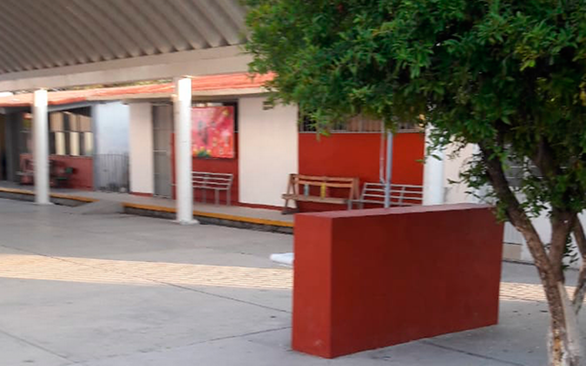

Miguel Hidalgo, ese es el nombre de mi querida primaria donde estuve 6 años. Esta fue la parte de mi vida en donde comenze realmente a conocer y aprender cosas nuevas, de todas las indoles. Aquí conocí a muchas personas, tanto amigos que hoy en día todavia tengo contacto con ellos y a quienes me apoyarian durante todo ese lapso y estancia.
Era en tercer grado cuando estaba por terminar un examen de matemáticas con el profesor que aun admiro mucho (su nombre es Emilio, es un gran profesor), y aun me faltaba mucho por terminar y el tiempo se me agotaba, sin embargo hice todo lo posible para recordar lo que había estudiado la noche anterior y gracias a que me esforcé haciéndolo, pude pasar el examen con la más alta calificación de la clase y el profesor me felicitó. Es un buen recuerdo de aquellos tiempos.